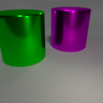
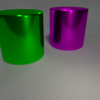

Object Property
- 4 Shapes
- 4 Colors
- 4 Sizes


 



Systematic compositionality, or the ability to adapt to novel situations by creating a mental model of the world using reusable pieces of knowledge, remains a significant challenge in machine learning. While there has been considerable progress in the language domain, efforts towards systematic visual imagination, or envisioning the dynamical implications of a visual observation, are in their infancy. We introduce the Systematic Visual Imagination Benchmark (SVIB), the first benchmark designed to address this problem head-on. SVIB offers a novel framework for a minimal world modeling problem, where models are evaluated based on their ability to generate one-step image-to-image transformations under a latent world dynamics. The framework provides benefits such as the possibility to jointly optimize for systematic perception and imagination, a range of difficulty levels, and the ability to control the fraction of possible factor combinations used during training. We hope that this benchmark will help advance visual systematic compositionality.

Our benchmark provides episodes consisting of two frames, referred to as the input image and the target image. These observations are procedurally generated from an underlying compositional scene state composed of two objects, each constructed as a combination of several intra-object factors such as color, shape, size, etc. In this figure, we show a rule called Shape-Swap that involves swapping the shapes of the two objects in the input scene to generate the target scene. Based on the Shape-Swap rule, we show three tasks with different levels of visual complexity.

This is an illustration of an example compositional visual world where an object's appearance can be described by its color and shape. In this example world, the training set would expose all the color and shape primitives individually. However, it would not contain all the 16 possible combinations. Rather, it would only expose a subset of them. Training splits of varying difficulty can be constructed by controlling an α parameter i.e., the fraction of all possible primitive combinations that are shown in the training episodes. In testing, we present the held-out combinations.
Our benchmark provides a total of 12 tasks.
Subsets. The 12 tasks are divided into 3 subsets containing 4 tasks each. This division is based on the perceptual complexity of the underlying visual worlds. We refer to these 3 subsets as:
Rules. Within each subset of the 3 aforementioned subsets, we provide 4 tasks based on 4 rules of increasing complexity:
Splits. Within each of these 12 tasks, we provide 3 training splits and 1 testing split as follows:
Contents of an Episode. Within each split, each episode has its own directory containing the following files:
To download all the splits of a specific task (out of the 12 tasks), use the following links. We provide the splits associated with all α values i.e., 0.0, 0.2 (Hard Split), 0.4 (Medium Split), and 0.6 (Easy Split). The following links point to the identical dataset as above but is packaged differently in a task-wise manner.
Omni-Composition Datasets Here, we provide an omni-composition dataset for each of the 3 subsets: SVIB-dSprites, SVIB-CLEVR, and SVIB-CLEVRTex. An omni-composition dataset is a dataset containing unpaired images that capture all possible combinations of primitives under the visual vocabulary of its corresponding environment.